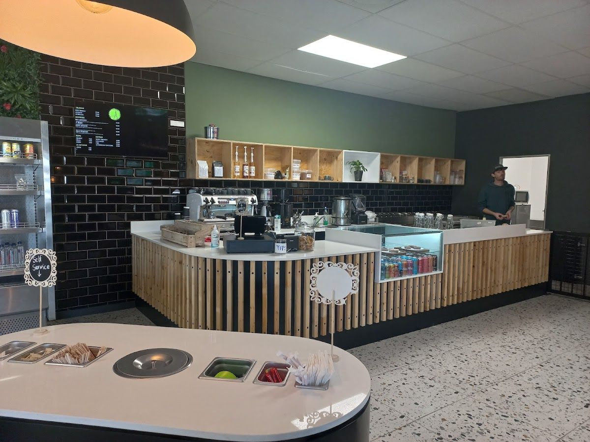
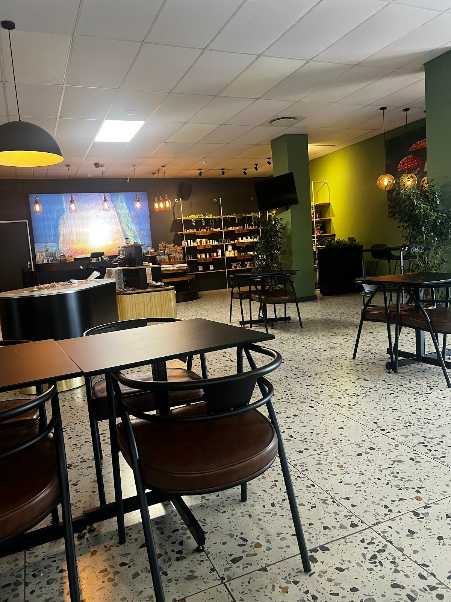
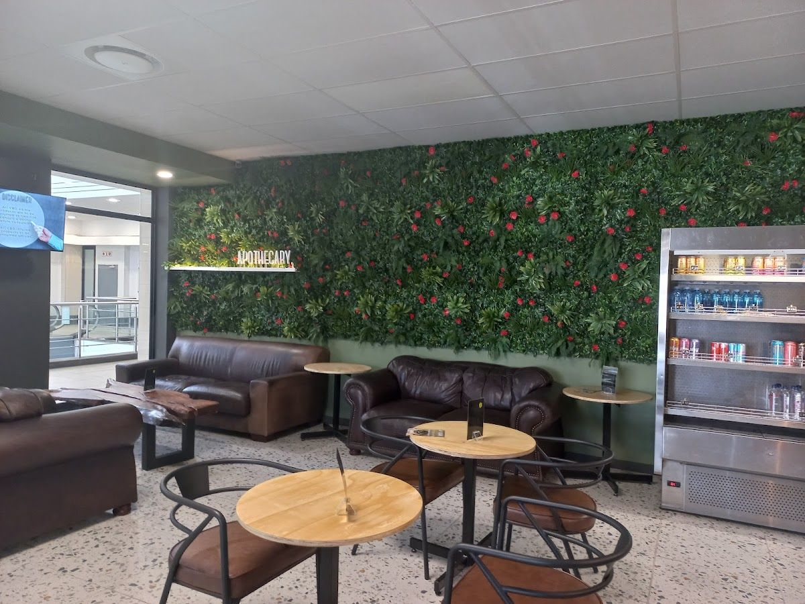
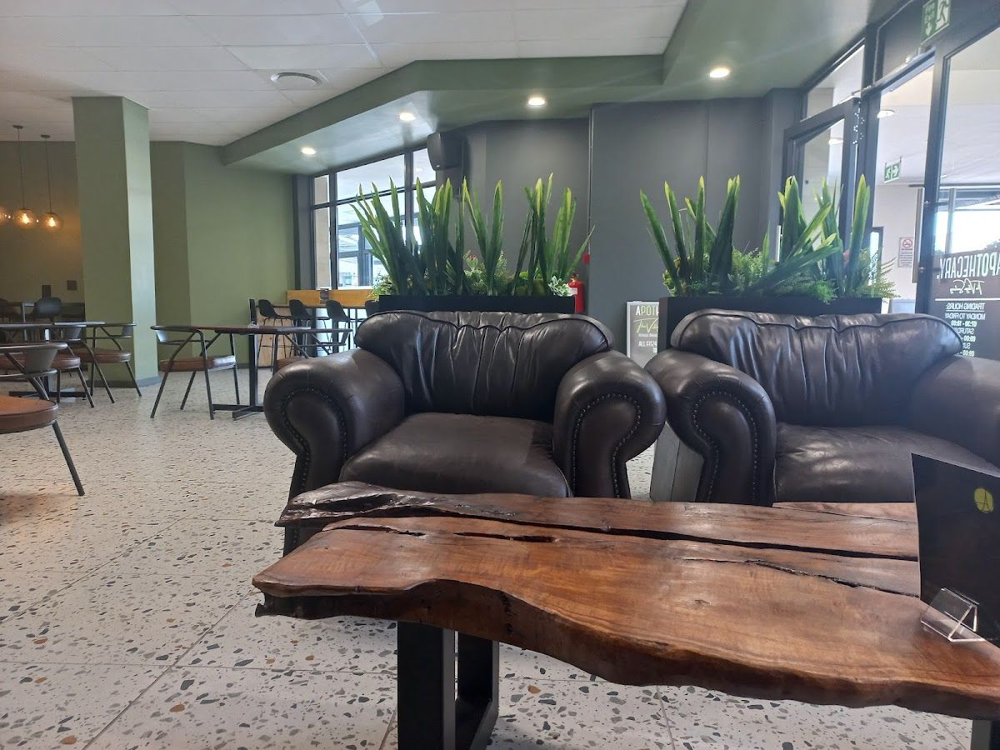

Experience the fusion of aromatherapy and delightful coffee in the heart of Sandton.
Get In TouchLocated in the vibrant Rivonia Village Shopping Centre, Apothecary The Village Rivonia is your local destination for aromatic experiences and cozy coffee moments. We serve the Sandton community with a unique blend of aromatherapy products and a welcoming café environment.
Our journey began with a passion for scents and flavors that invigorate the senses. We believe in creating a space where you can relax and enjoy the therapeutic benefits of our carefully curated aromatherapy products, while sipping on a perfectly brewed cup of coffee.
At Apothecary, we are committed to quality and customer satisfaction. Our friendly staff is always ready to assist you in finding the right product or making your coffee experience memorable. Visit us and discover the scents that bring life to your senses.
Explore our range of aromatherapy products and enjoy a delightful cup of coffee at our café. Each offering is designed to create a calming and enjoyable atmosphere.
Discover our selection of natural essential oils that promote relaxation and wellness. Perfect for home use or as a thoughtful gift.
Enjoy a cup of our expertly brewed coffee, made from high-quality beans to provide a rich and satisfying taste experience.
Here is what our clients say about us.
"Great cbd coffee, great biohacking supplements and lovely helpful staff. Great ambiance and decor. Definitely worth visiting."— Jewel Ok, ⭐⭐⭐⭐⭐
"Both their Rivonia and Fourways branch have wonderful service and warmth but I was particularly sold with the Rivonia staff. Tyron spent a great amount of time educating me on their CBD products and benefits with complete honesty and the rest of the staff made the entire experience so hospitable. Really recommend for all!"— Palesa Maloisane, ⭐⭐⭐⭐⭐
"Really nice spot... Not too crowded... Super friendly service and the coffee was good. Nice option for the people that use the gym next door... They get a discount for smoothies.. They also have a whole shelf for CBD gummies and natural health supplements to choose from."— Natasha Padachy, ⭐⭐⭐⭐
"Friendly and helpful staff! Great place to work or just have a coffee"— Khaleesi, ⭐⭐⭐⭐⭐
"Nice venue, good music, friendly people"— Marika, ⭐⭐⭐⭐⭐




We'd love to hear from you — reach out to us anytime.